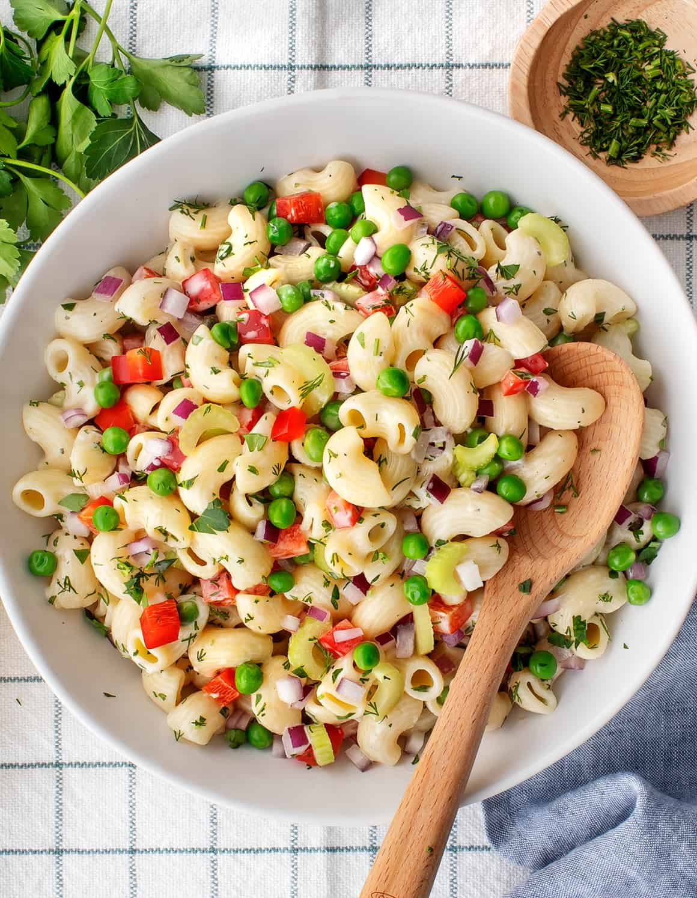

Odin Recipes
Classic Macaroni Salad

Description
This flavorful macaroni salad is easy to make and is the perfect crowd-pleasing dish to bring to your next picnic or potluck.
Ingredients
- Macaroni: Of course, you’ll need macaroni noodles!
- Condimetns: A creamy blend of mayonnaise and yellow mustard adds tons of flavor.
- Sugar and Vinegar: White sugar adds a dose of sweetness, which is pleasantly balanced by white vinegar.
- Seasonings: This macaroni salad is simply seasoned with salt and ground black pepper.
- Vegetables: You’ll need celery, an onion, and a bell pepper. Grated carrots and pimento peppers are optional, but they add welcome flavor and color.
Steps
- Cook macaroni in salted water.
- Mix the mayonnaise, sugar, vinegar, mustard, and seasonings together.
- Stir in the macaroni and remaining ingredients. Chill in the refrigerator.